Inside the race to keep secrets safe from the quantum computing revolution
I spoke to experts including startup CEOs and former GCHQ head Robert Hannigan on the global effort to develop post quantum cryptography.
Read →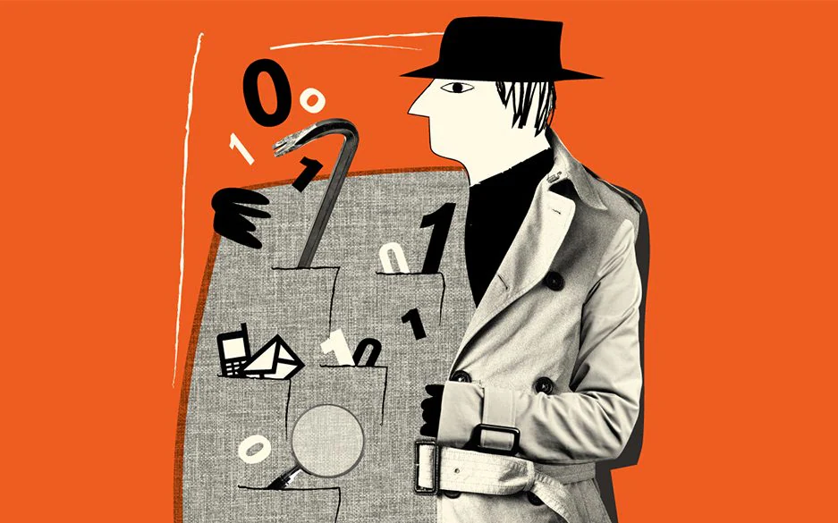
Meet the cyber mercenaries — and the activists trying to stop them
Why activists are growing increasingly concerned about private businesses selling hacking and surveillance tools.
Read →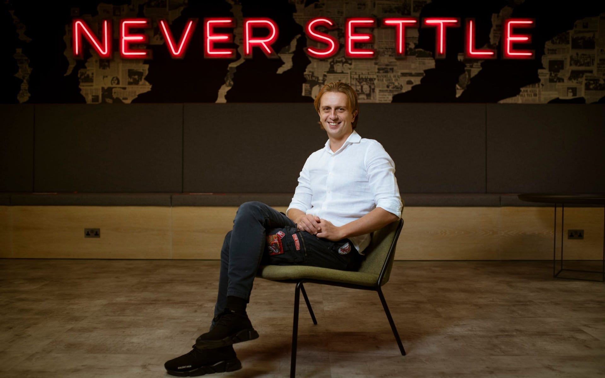
Revolut's billionaire founder has a plan to transform banking
A profile of Revolut chief executive Nikolay Storonsky.
Read →'It was just unbelievably chaotic': Inside the brutal rivalry between Monzo and Starling Bank
An inside account of the chaotic events of February 2015 which led to a mass walkout of employees from Starling Bank who went on to start Monzo.
Read →Why Sweden is on the verge of another tech revolution
Skype billionaire Niklas Zennström, Sweden's business minister and a collection of other experts explain why Sweden has built up a remarkably strong startup scene.
Read →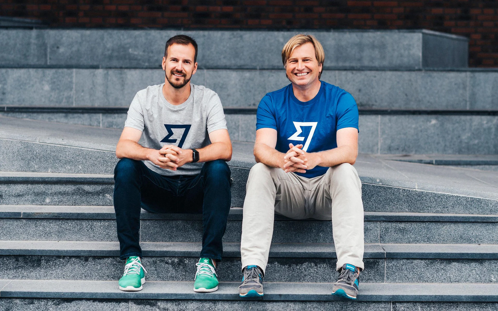
Meet the quiet Estonian behind TransferWise, Britain's third most valuable fintech worth $5 billion
Profile of TransferWise chief executive Kristo Käärmann.
Read →Britain's top cyber spy Ciaran Martin steps out of the shadows
My profile of Ciaran Martin, the former head of the National Cyber Security Centre, as he leaves the division of GCHQ to teach at Oxford University.
Read →The secretive UK fund behind the government's $500 million investment in OneWeb
My profile of the National Security Strategic Investment Fund, a VC fund run by the UK's security services which was instrumental in the government's OneWeb investment.
Read →How North Korea's army of hackers stole $2 billion through cyber bank heists
Inside a series of North Korean hacking attacks, including exclusive details on how people and businesses in the UK were approached by the hackers.
Read →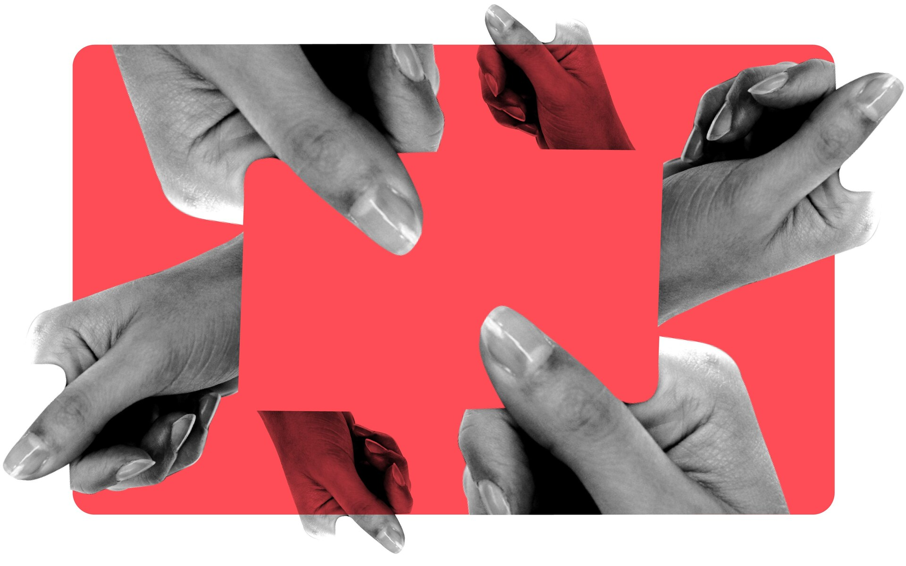
Can the UK's fintech start-ups survive coronavirus?
Inside the UK's fintech sector as startups trim their growth plans following the coronavirus pandemic.
Read →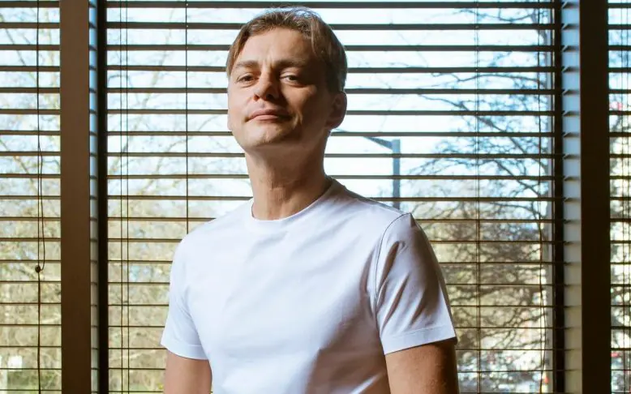
'It's not misogyny': Online dating boss denies claims of strippers and drug-fuelled wild parties
Profile of Andrey Andreev, the Russian founder of dating app Badoo, on the eve of its $3 billion sale to Blackstone.
Read →Prince Andrew refuses to give up Pitch@Palace, as it emerges he can take a cut of every deal
News story on Prince Andrew's startup competition and its potentially lucrative terms.
Read →Léo Apotheker: the man behind HP's disastrous $11 billion acquisition of UK's Autonomy
Exclusive profile of former HP chief executive Léo Apotheker where he talked for the first time about being fired from the company.
Read →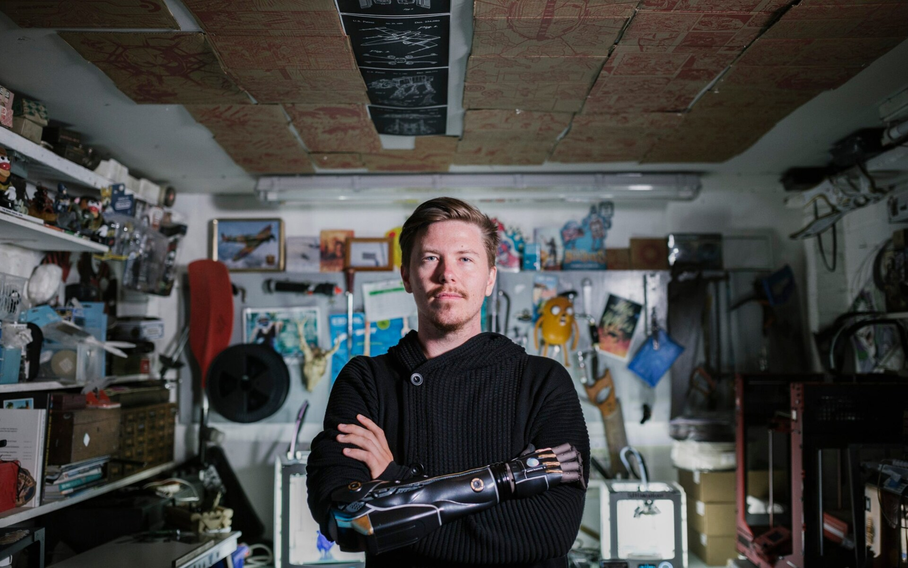
Why Bristol is leading the UK's robotics revolution
Inside Bristol's robotics startup hub.
Read →How UK military veterans are fuelling Britain's booming cybersecurity industry
Meet the veterans playing a crucial role in cybersecurity startups in the UK.
Read →Zwoop, the tech start-up backed by billionaire Robert Friedland, slides into administration
How an e-commerce startup backed by mining billionaire Robert Friedland collapsed into administration and claims of black holes in its finances.
Read →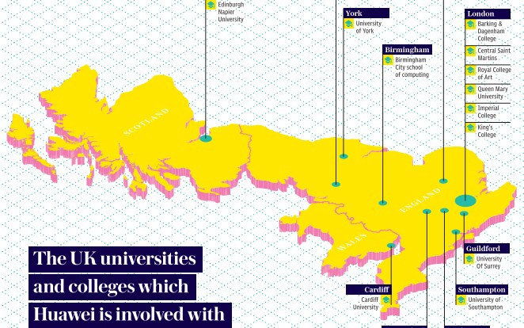
MPs warn on Huawei's 'disturbing' ties to UK universities amid security fears
The Telegraph investigation into Huawei's extensive funding of UK universities which prompted Oxford University to ban grants from the company.
Read →Inside Monzo's ambitious plan to rebuild the bank account
2018 profile of digital bank Monzo and its chief executive Tom Blomfield as it embarked on a new stage of growth.
Read →Inside the battle to bring electric scooter-sharing start-ups to Europe
A first-hand account from Paris on electric scooter startups' battle to bring the vehicles to Europe.
Read →The city of love woos Europe's leading startups
How Station F in Paris is spearheading France's efforts to win over technology startups.
Read →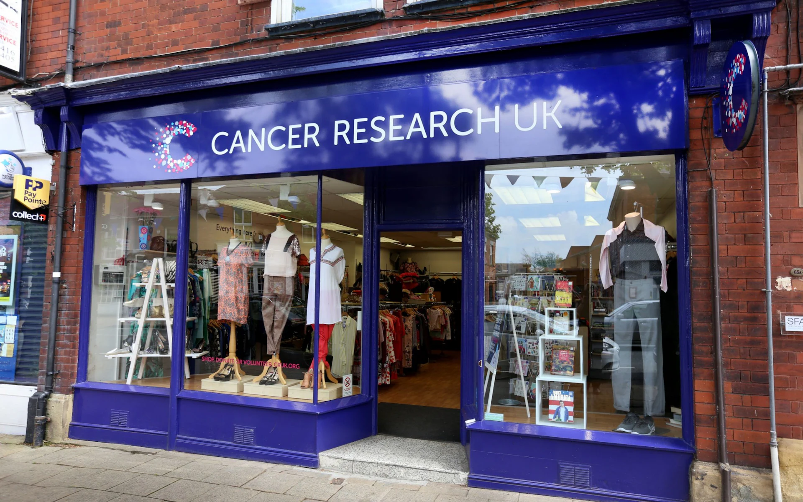
Russian hackers targeted Cancer Research UK and other British businesses
Cancer Research UK has been targeted by the Russian hackers behind cyber attacks on British Airways and Ticketmaster. Magecart, an anonymous Russian group of cyber criminals, tried to steal the card details of people in the UK who had brought items through the cancer charity's online gift shop.
Read →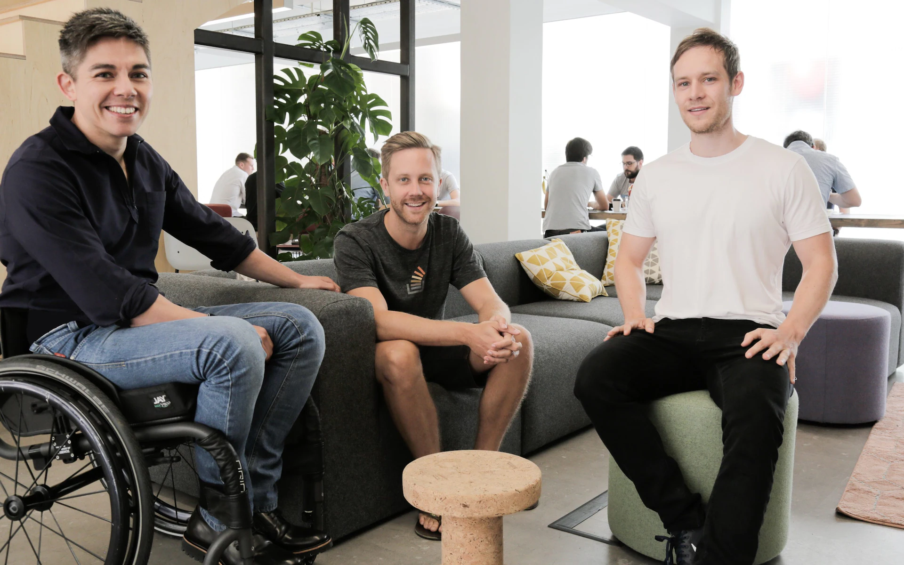
'Give us the rules. Whatever the rules are on Brexit, we will deal with it', say GoCardless founders
The three Oxford graduates behind GoCardless, the Farringdon-based online direct debit business which processes more than £5bn worth of transactions a year, are among Britain's most successful tech entrepreneurs.
Read →Google search exposes sensitive files and emails from inside the government and the NHS
Exclusive investigation which revealed leaked internal government and NHS files had been made available for years to anyone using Google.
Read →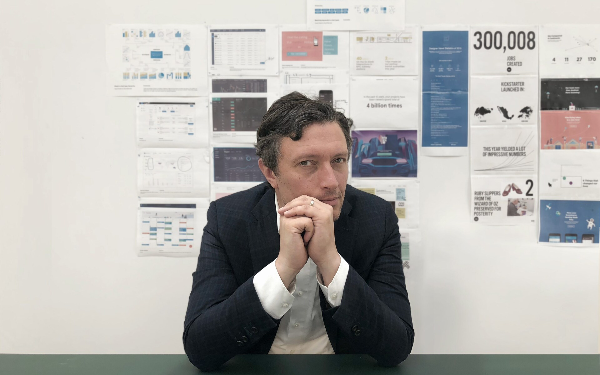
The Grammy-nominated tech founder tackling online piracy
Andy Chatterley, founder of UK-headquartered technology start-up MUSO, knew that he wanted to start a business in the music industry, but it was only when his wife's album leaked online days before its release that he realised he could make a business around piracy.
Read →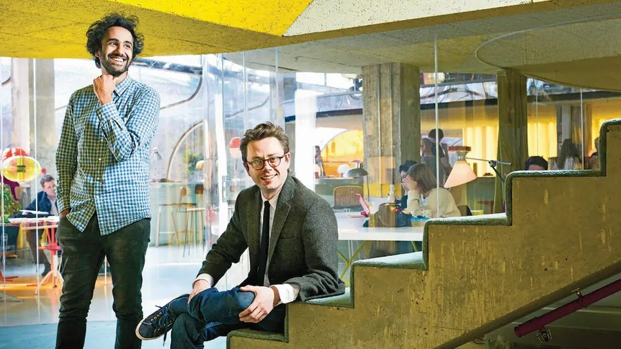
Second Home's founders have global ambitions for their office empire
Workspace company Second Home is expanding its office empire to include a new space for corporates in Clerkenwell, London.
Read →The 100 coolest people in UK tech
I set up Business Insider's definitive annual rankings of the UK tech scene, with 2017's edition launched in an event at the Gherkin.
Read →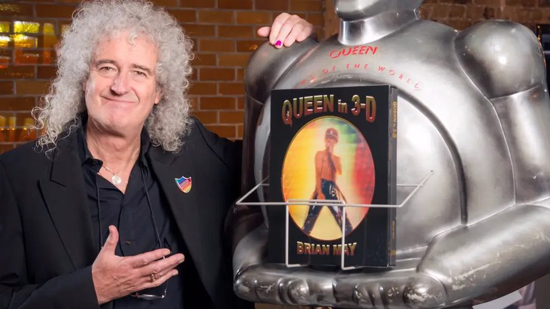
Brian May on his new 3D photo book, virtual reality, and what he wants from the new iPhone
I interviewed Queen guitarist Brian May about his new photography book and the world of technology.
Read →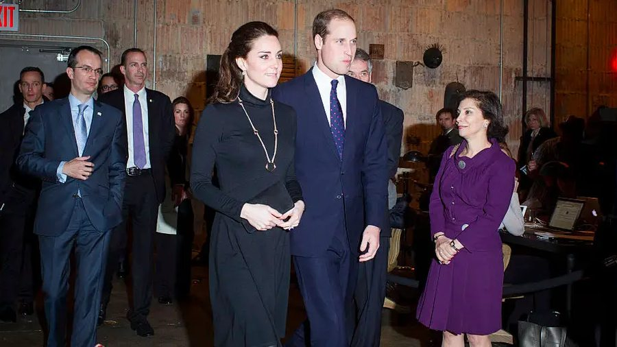
Private members' club Neuehouse abandoned its plan to open in a historic London building
Neuehouse, the American private members' club, abandoned its plan to expand to a historic building in London and will no longer lease space in the Adelphi Building.
Read →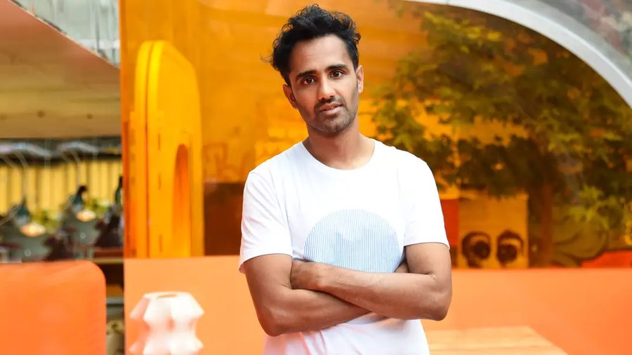
Rohan Silva's next project is building affordable homes in London
Profile of Second Home cofounder Rohan Silva.
Read →Why the man in charge of Balderton Capital thinks $1 billion valuations are a 'smoke screen'
A profile of Bernard Liautaud, the head of London venture capital firm Balderton Capital.
Read →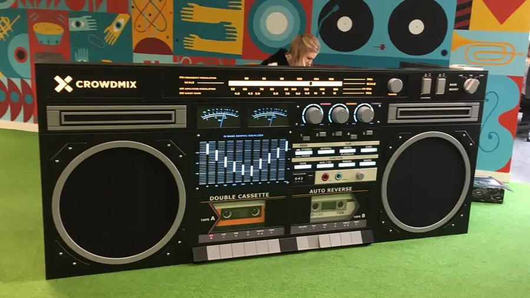
How Crowdmix blew through £14 million before going bankrupt
My investigation into the downfall of London music startup Crowdmix.
Read →How Jay Z bought a startup and turned it into one of the most famous music companies in the world
The definitive history of Tidal and Jay Z's purchase of the European music streaming startup.
Read →'OriginalGuy': The full story of the iCloud hacker who leaked naked photos of celebrities
How naked photographs of celebrities emerged on to the internet in 2014.
Read →